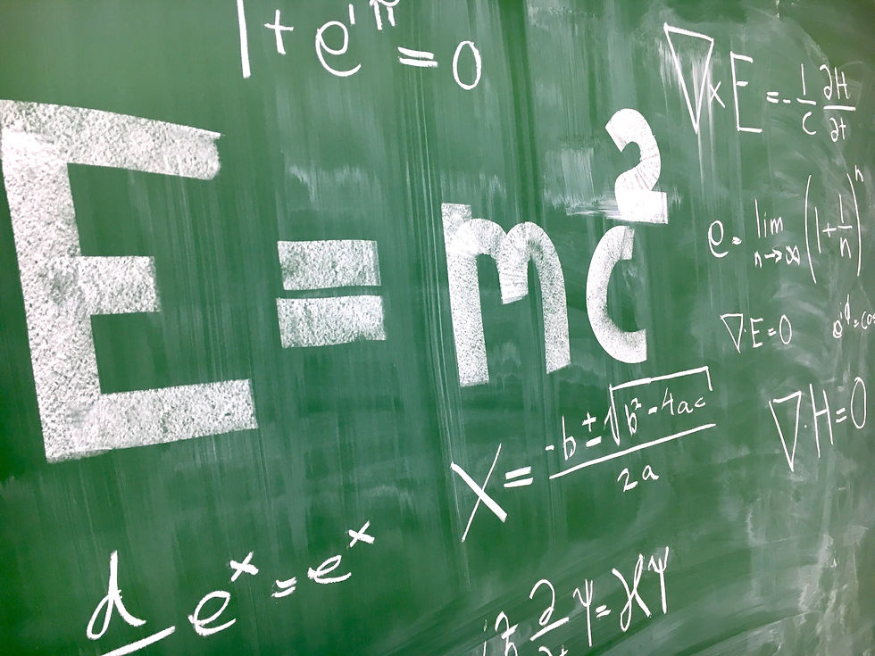
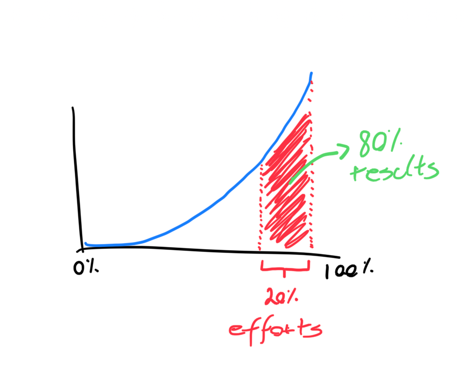
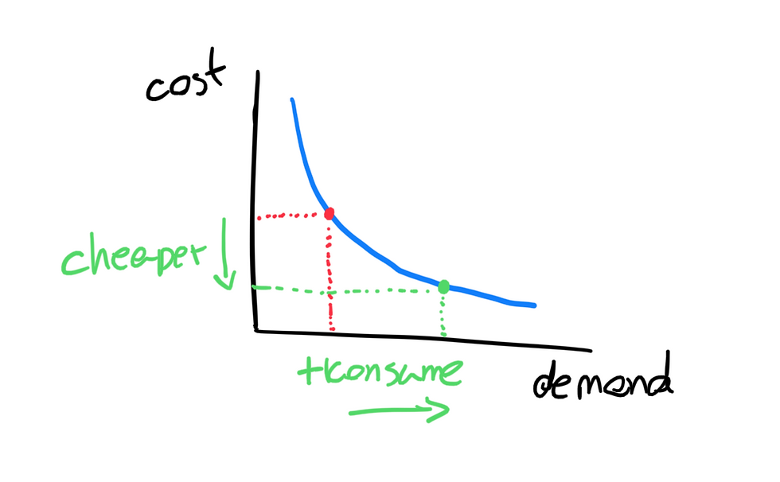
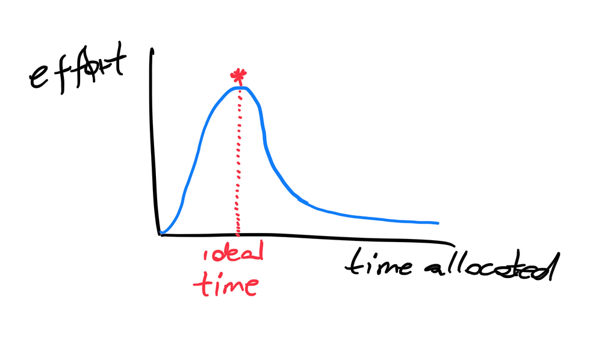

The Physics of Productivity (or the Intelligence of Laziness) - Part 1/2
2023-08-29

"I don't have any special talents. I'm just passionately curious" - Albert Einstein
I am always amazed at how much the most valuable things to learn are often overlooked in formal education. Contrary to what I hear out there, I'm not against teaching about quadratic equations or mitochondria. What I find strange is that the human being, despite being complex, is a relatively predictable animal. This means that we know more or less the challenges we will encounter in life: developing good relationships for happiness and meaning, managing financial resources so as not to experience difficulties or taking care of our health to live well.
Among all these, there is one thing that no one teaches us: how to work. Of course, we are taught specific aspects and tasks such as cleaning the house or using spreadsheets. What no one teaches us is how work works in practice and how we can do well at it regardless of the task at hand. Producing is something that is expected of everyone in some way, whether it is more or less tangible.
From time to time I see people criticizing productivity, saying that it is our mania to want to do more and more that creates a generation of workaholics and degrades the planet. I disagree. This isn't criticizing productivity, it's criticizing production . While production is something normally measured in absolute values (how much was produced), productivity is measured in relative ratios (how much was produced compared to the effort to produce). Productivity, then, is about finding smarter and more efficient ways to reach a production goal. It's more about the means than the ends. The ends are fundamental, but it is often the means that exhaust us.
The brain has the incredible ability to seek efficiency in the means. Our intelligence does not come only from the desire to learn more things, but mainly from the attempt to save energy. Think of the invention of the wheel and what the world was like before it. The same thing goes for cars, computers and software. It's all about saving energy. You could say that our intelligence is driven by active laziness .
Like you, I have some experience working. What makes me try to go a little further here is to look at this experience and act to improve it, which I have been doing as an entrepreneur and consultant for the last ten years. This curiosity led me to look for studies and theories about how productivity works and, therefore, I start a series here on the Physics of Productivity - a beautiful name for ideas that help us understand how productivity works.
Some laws, principles and paradoxes help us to bring real examples and possible solutions to the dilemmas we encounter. So let's start with a basic one:
1. The 80/20 Rule or The Pareto Principle

The Pareto Principle, often known as the 80/20 rule, is a fundamental concept in studies of productivity and time management. Originated by the Italian economist Vilfredo Pareto, it suggests that, in many cases, about 80% of the effects or results are originated by only 20% of the causes or efforts. For example, it is common to find situations in which roughly 80% of sales are generated by about 20% of customers. Likewise, in personal and professional tasks, often only 20% of the activities are responsible for 80% of the desired results. Although it is not a “law” but a principle, its application can be summarized by: find out where what really works is and put your effort into it.
2. The Peter Principle

You must have heard about the Impostor Syndrome, in which the person fails to recognize their achievements as the result of their ability and creates the illusion that they did not deserve to be where they are. Unfortunately it is supported by the Peter Principle. Laurence J. Peter in 1969 stated that employees are promoted until they reach their "incompetence level," that is, a position where they are no longer effective.
The point here is to realize that promotions are often based on past performance rather than aptitude for new responsibilities. You know when someone says: “Jon doe was a great technician and was promoted to a terrible leader”. This is a symptom that we try to get the most out of others (and ourselves) to the point where we realize that what is required for that position is greater than the resources available to the person to exercise it.
Organizations need to learn to create ways to grow that can even be justified by past results, but need to be supported by future results (in other words, potential). The irony lies in the fact that companies often offer training to people with less experience and those who rise to higher positions tend to be seen as those who no longer need training or guidance when, in fact, they are the ones who do most.
Therefore, the key term, whether internally for those who are developing, or for the organization that offers training is: increasing marginal humility* . The more you learn, the more openness you create to learn. The opposite of this is what generates stagnation, arrogance and limits personal and organizational results. On an individual level, it is the habit of questioning your abilities that makes this principle not apply to you. Or, as Mark Twain put it:
It's not what you don't know that hurts you, it's what you know is true when it isn't.
*This is an idea that we'll explore further in an upcoming article
3. The Jevon's Paradox

You planned to spend up to $50 on beer at a party where each can cost $10, which would allow you to drink 5 beers. However, when you arrive at the party, you discover that the beer is on sale for 5 bucks each. What is most likely to happen:
a) Drink only 5 beers and spend $25 instead of $50.
b) Have 10 beers and spend the same 50 bucks planned.
c) Losing the line and saying “it's cheap, I'll enjoy it” and having 30 beers, spending $150 and leaving the party in an alcoholic coma.
The Jevon Paradox is an observation in the field of microeconomics that suggests that increasing efficiency in the use of a resource paradoxically leads to an increase in the consumption of that resource, rather than a decrease . This concept was originally formulated by British economist William Stanley Jevons in the 19th century, noting that improvements in the efficiency of steam engines led to an increase in demand for coal, rather than reducing it. This paradox has important implications for sustainability and energy efficiency policies, as it suggests that simply making technologies more efficient may not result in lower resource consumption, and may even increase it. As a matter of fact, this goes not too far from the supply x demand theory if you think about it.
Then, yes, most likely you would choose option C, because as the saying goes “who never ate molasses, when he eats it gets smeared”. How to deal with it? Simple (but difficult): self-imposed constraints . If, regardless of the value, you create your own restrictions, you are less likely to be another victim of the Jevon Paradox. So just leave home with only 50 bucks in your pocket and have a good time at the party with no more than that.
4. The Parkinson's Law

British researcher Cyril N. Parkinson published an article in 1955 (which could well be humorous), postulating that work expands so as to fill the time available for its accomplishment . In other words, if you have an entire day to do a task that would normally take two hours, somehow the task will expand and become more complex to take up the entire day. Even more directly: “if there is an opportunity for procrastination, that opportunity will be made the most of”.
This idea has been widely observed in different contexts, from business management to personal organization. It also gave rise to the concept of "structured procrastination", where people do less urgent tasks to avoid doing what really needs to be done, thus filling available time. There's a reason for that, but let's save it for when we drill down on behavior design.
Yes, procrastination is something that everyone has to deal with in at least one dimension of life. The tragicomic issue, however, is in the organizational culture. Imagine the scene where you deliver your work above what is expected, and next thing you know, it's still 3 pm. You are proud of how you did and how productive your day was. Gather your things, get up to leave, until the Official Bureaucrat Jackass (or OBJ for the intimate) says: “look everyone, we have an early bird leaving the office”. The OBJ, the champion of unpleasantness, represents Parkinson's Law in the worst possible way. Personally, I believe that law it is the most important among those mentioned here and that it can help to better understand how issues such as burnout are triggered in a systemic way in many organizations.
If you work in a company where people value the effort more than the result, you can be sure that this law is not only present, but institutionalized. The antidote? Well, in addition to a good dose of remote work, it can always be important to recognize the effort, but to reward intelligence and efficiency. More than that, stop worshiping the work itself to admire the result created.
The idea of splitting this article in two is because each of these ideas takes some time to understand, so it's better to go little by little.
Productivity, when developed the right way, can lead us to live healthier, more meaningful lives and create more time and attention for the things that matter most to us. The objective here is not to be able to increase the quantity produced indefinitely, but rather to create space so that we can also dedicate ourselves to activities in which production is completely irrelevant. In fact, it is in these activities that we often find the energy and meaning to keep producing. This is the virtuous cycle we seek to explore here.
See you in part 2!